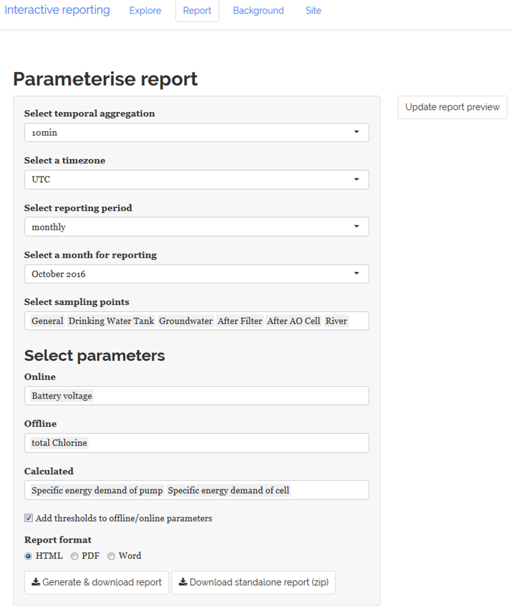
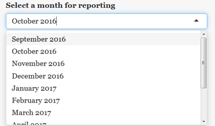
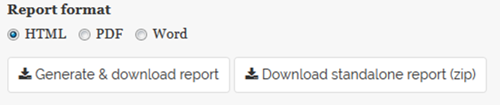
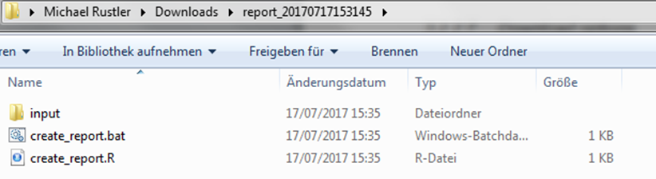
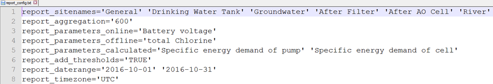
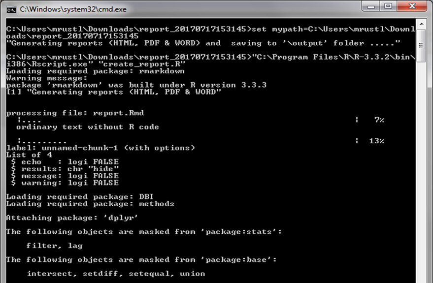
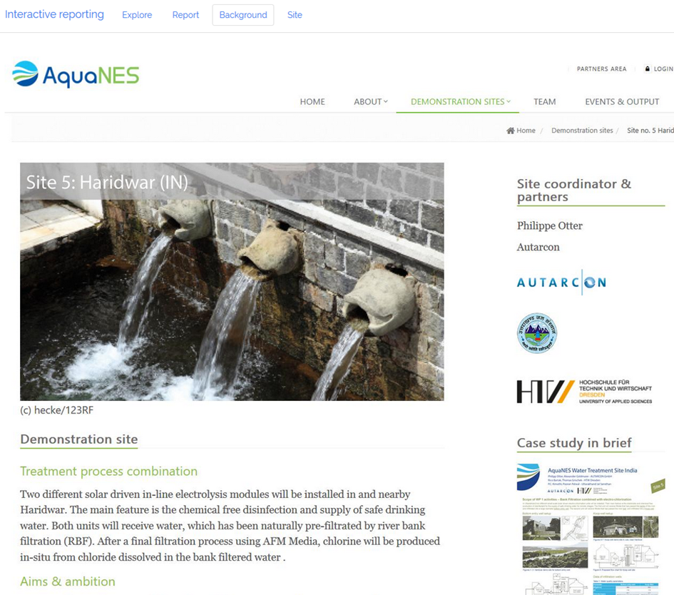
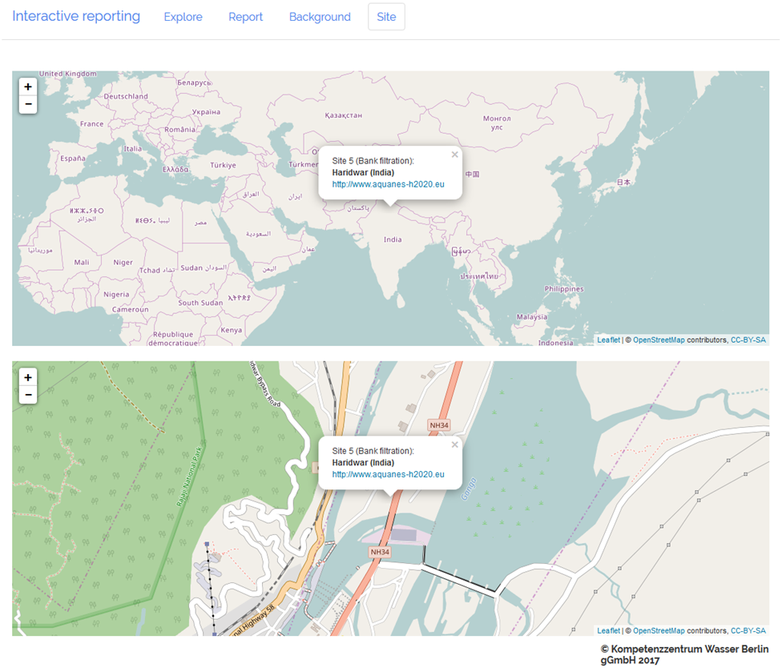

Within the report panel automated reports with user defined parameterisation can be generated and will be previewed in HTML below the Update report preview button (top right in Figure below) once it is clicked.
 Figure 15 Screenshot of the “Report” tab panel
Using the default parameterisation (see Figure above) and clicking the “Update report preview”" button the HTML preview for the Haridwar site can be explored by clicking the link below:
In the following sub-chapters the available options for parameterising (Chapters 3.2.1 - 3.2.6) and downloading (Chapter 3.2.7) the report are described in detail.
3.2.3 Select a reporting period
For selection the reporting period two options (“monthly” and “user-defined”) are available as shown in the Figure below.
 Figure 18 Select “monthly” reporting period
Monthly If the option monthly is selected in the Select reporting period step, the user can choose from a drop-down box one of the available months (i.e. September 2016 – July 2017), for which data is available for the Haridwar site as shown in the Figure below.

User defined This option enables the user to select a specific time period (e.g. 2016-09-05 to 2016-10-31) by defining the date range as already described in Chapter 3.2.3.
3.2.4 Select sampling points
see Chapter 3.1.5
##3.2.5 Select parameters
The user can select the following parameters:
Online
Offline
Calculated
Note: The parameter selection workflow is the same as described in Chapter 3.1.6.
##3.2.6 Add thresholds to offline/online parameters
see Chapter 3.1.7
3.2.7 Download options
There are two different download options available as shown in Figure 20:
Basic: Generate & download report: clicking this option generates and downloads the report using the user defined parameterisation in your selected report format (html, docx or pdf) and saves it with the name “automated_report.YOUR_SELECTED_FORMAT”
Advanced: Download standalone report (zip): clicking this option downloads a .ZIP file with the name “report_DateTime.zip” (with DateTime = date time of download). Using this approach only exports the user defined report configuration without already generating the report output. This option may be useful if a user defined configuration should be saved and automatically all three report formats (i.e. pdf, docx and html) should be generated.
 Figure 19 Report download options
Workflow for “Download standalone report (zip)”
Due to the higher complexity for using the standalone report option the required workflow.
Step 1: Download Download a “report_DatTime.zip” (with DateTime = date time of download) by clicking on “Down-load standalone report (zip)”
*Step 2a: Unzip
After downloading unzip all files to a folder of your choice, e.g.: C:/Users/YOUR_USERNAME/Downloads/report_20170717153145/
The files in this folder must be identical to Figure 21 and the files in the subfolder “input” should must to be identical with the ones shown in Figure 22.

Figure 21 Folder “…/report_20170717153145” with unzipped files of “report_20170717153145.zip”
 Figure 22 Files in subfolder “input” of “report_20170717153145”
Step 2b (optional): Change reporting period Inspecting “report_config.txt” in an editor shows which user defined parameterisation was exported (Figure 23). Modifying this configuration file manually is not recommended as it may introduce errors. However, an exception is the parameter report_daterange (line 7) as it is self-explaining enough for being adapted by the user and enables to generate the report for a different time period (com-pared to the one initially defined at the time of the download). For doing you the starting and end of the time period need to be specified in the following format: report_daterange=‘YYYY-MM-DD’ ‘YYYY-MM-DD’ For this tutorial the reporting period was changed to 2016-11-01 until 2016-11-30 (see Figure 24).

Figure 23 “report_config.txt” with user defined report configuration (downloaded configuration)
 Figure 24 “report_config.txt” after modifying parameter “report_daterange” (line 7)
Step 3: Generate the report For generating the reports you need to execute the file “create_report.bat” (which is located in the main directory of the unzipped report folder, see Figure 21) by double-clicking. Subsequently you will see a security warning, which you need to accept (Figure 25).
 Figure 25 Accept security warning to exeute “create_report.bat”
Figure 25 Accept security warning to exeute “create_report.bat”
In a next step the MS DOS command line will open with a similar output as shown in Figure 26.
 Figure 26 MS DOS output after starting execution of “create_report.bat”
Figure 26 MS DOS output after starting execution of “create_report.bat”
This step may take a while as the report is generated by default in all three different formats (pdf, html, docx) and depending und the length of the reporting period (and the amount of raw data) this requires some time. Finally the report generation should end similar to this output (Figure 27):
 Figure 27 MS DOS output after completing execution of “create_report.bat”
Now you can inspect the reports in PDF, HTML and DOCX format in the newly created subfolder “/output” (Figure 28).
 Figure 28 Report files in subfolder “output” of “report_20170717153145”